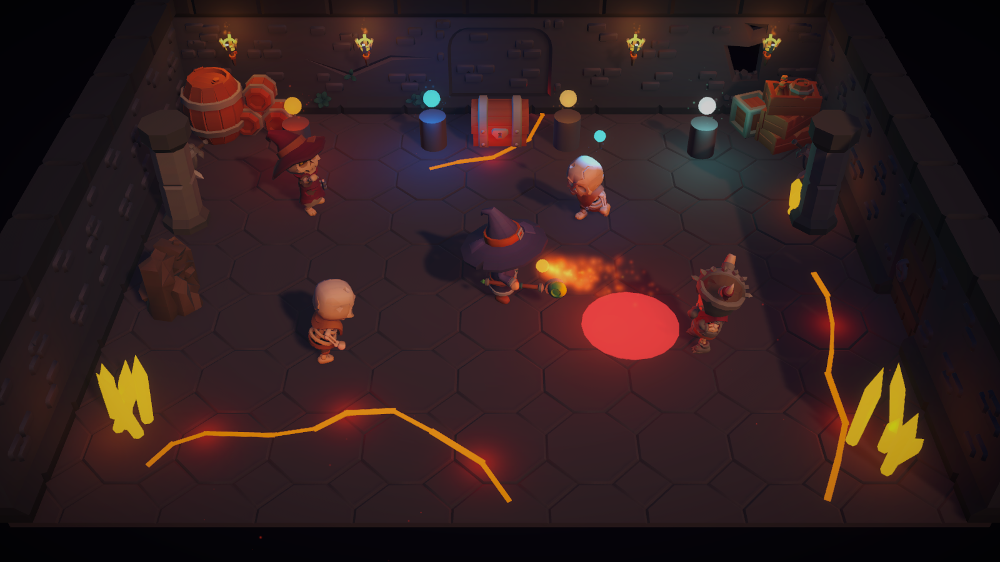
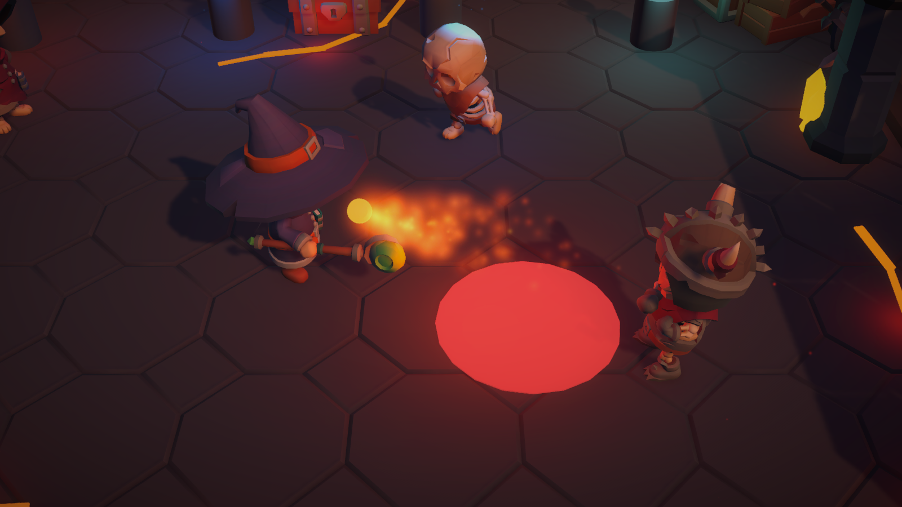
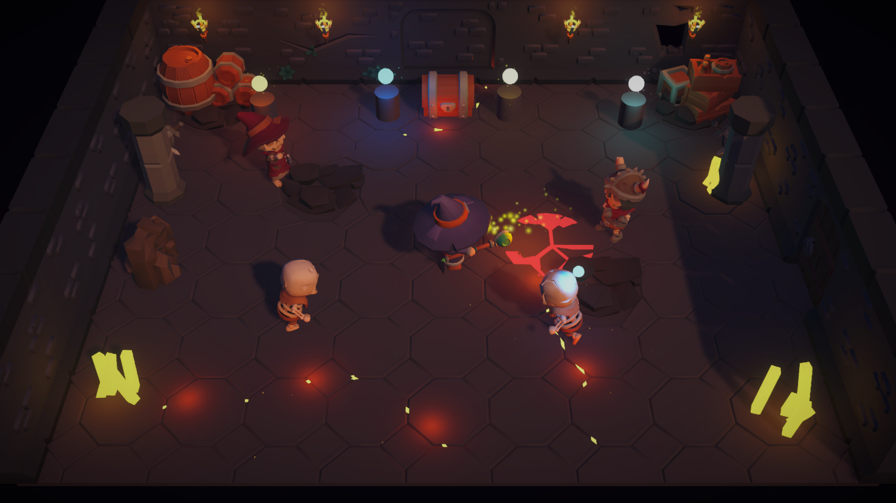
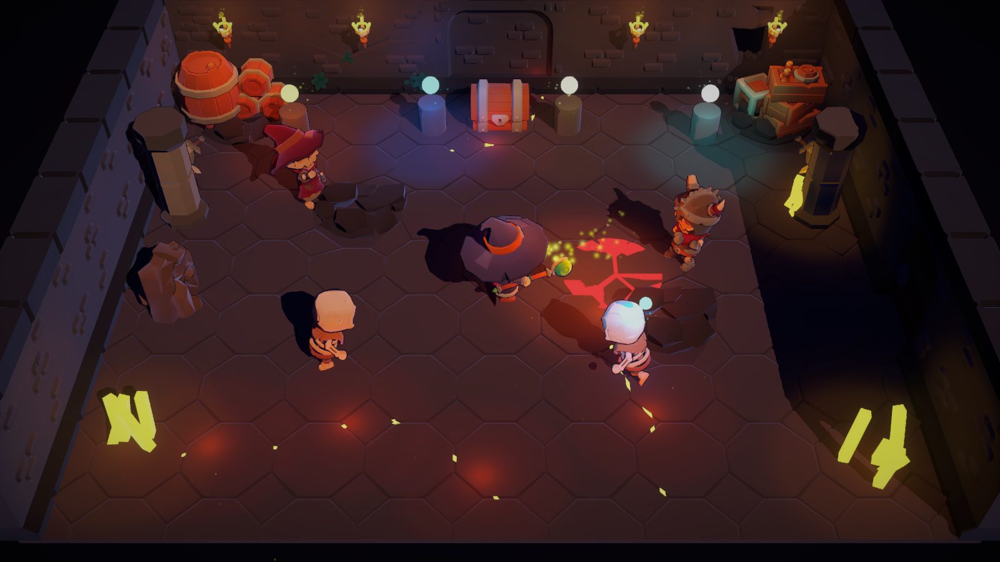
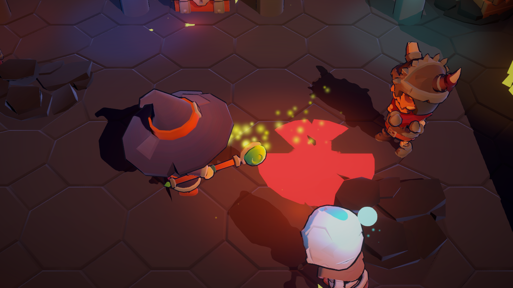
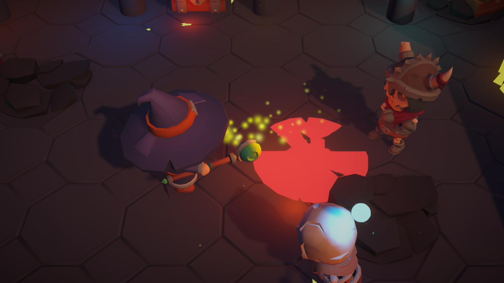

Quintessence 3D — Look-dev
Variação B (URP Lit) escolhida. Abaixo a segunda passada (v1); o comparador A/B do v0 fica no fim como registro. Clique em qualquer print para ampliar.
v1 — alvo visual atual


O que mudou do v0 pro v1
- Câmera mais baixa (46° → 41°): dá pra ver o rosto do herói
- Feitiço de fogo virou labareda laranja de verdade
- Rachaduras de brasa visíveis, com brilho vermelho no piso
- Cristais âmbar com forma de cristal (malha própria)
- Emissivos mantêm a cor do elemento em vez de estourar pra branco/amarelo
Ainda falta
- Orbe de Ar ainda sai quase branco; Fogo e Terra ficam parecidos
- Cristais estão amarelos demais, deviam ser âmbar
- Telegrafia é um disco chapado; vira anel animado quando houver shader
Registro: v0, comparação A × B
Comparador (arraste)


Sala inteira
Close no herói


Notas do v0
O que tem na cena
- Herói (mago) lançando fogo num esqueleto guerreiro
- Disco vermelho no chão: telegrafia do ataque inimigo
- Esfera ciano sobre um inimigo: marca de Água
- Quatro santuários ao fundo, um por elemento
- Rachaduras de brasa e cristais âmbar: a corrupção
- Modelos KayKit (CC0), câmera a 46°, FOV 30
O que ainda está ruim (nas duas)
- Rachaduras de brasa quase não aparecem
- Feitiço de fogo virou pontinhos amarelo-esverdeados
- Orbes dos santuários estouraram pra branco
- Câmera esconde o rosto do herói atrás do chapéu
- Cristais são cubos esticados, só marcam posição